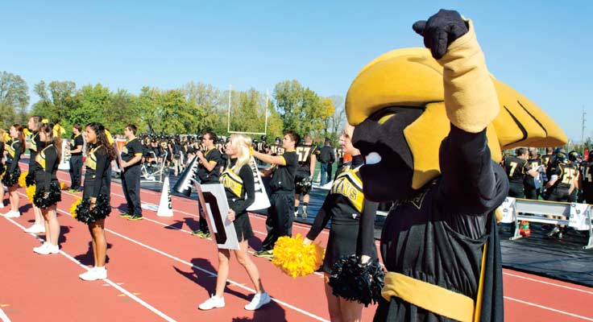

Since 1871, the University of Wisconsin Oshkosh has been providing residents of northeastern Wisconsin with high-quality, affordable education through 60 undergraduate majors, 30 master’s degree programs and one doctoral degree for our more than 13,500 students.
With nationally-accredited programs, award-winning faculty and quality support services, UW Oshkosh provides students with opportunities for on-campus and online learning, faculty-student collaboration and personal and professional growth with degrees in our four colleges.
UW Oshkosh produces well-rounded student-athletes in 21 intercollegiate sports and provides opportunities for students to participate in intramural and club sports, as well as maintaining a state-of-the-art workout facility.

As University of Wisconsin Oshkosh alumni, you are part of our large and growing network. More than 83,000 people throughout the U.S. call UW Oshkosh their alma mater! Stay involved and watch the value of your degree continue to grow.
Achieve your goals with a UW Oshkosh degree. Here, your passions can be explored through student organizations, internships, graduate assistantships and student-faculty collaborations. UW Oshkosh has resources for traditional and nontraditional students, graduate and international students.
Led by the dedicated and accomplished Chancellor Richard H. Wells, the University of Wisconsin Oshkosh’s administration continues to provide a high-quality, affordable and comprehensive education to our students and community.
UW Oshkosh’s sustainable campus provides a safe place for a diverse community of students, faculty, staff, parents and visitors through our quality academic, technology, employment, financial and campus resources.
The community is invited to attend events hosted by our students, faculty and staff on the UW Oshkosh campus. View the public events calendar, as well as important deadlines and academic schedules.

The University of Wisconsin Oshkosh — Where Excellence and Opportunity Meet.